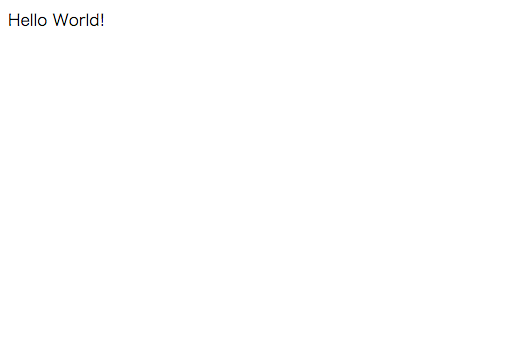
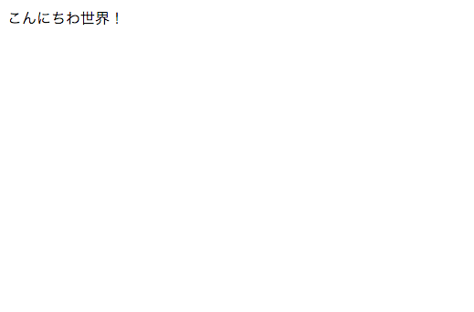

2.2.コントローラの作成
MVCでいうのC(コントローラ)です。
さて、それでは実際に画面に“Hello World”を表示してみましょう！
コマンドプロンプト上で、アプリケーションホームに移動して、grailsコマンドを実行して、インタラクティブモードに入りましょう。
そうすると、以下のような状態になるはずです。
grails>
この状態で、以下のコマンドを実行してください。
create-controller hello
実行すると以下のようなメッセージが表示されます。
grails> create-controller hello
| Created grails-app/controllers/hello_grails/HelloController.groovy
| Created src/test/groovy/hello_grails/HelloControllerSpec.groovy
grails>
create-controller コントローラ名を実行することで、コントローラと、そのコントローラのためのテストファイルが作成されます。
では、作成されたgrails-app/controllers/hello_grails/HelloController.groovyをテキストエディタで開いてみましょう。
（なお、このように作成されたファイルはアプリケーションホームからの相対パスになります。）
package hello_grails
class HelloController {
def index() { }
}
上記のコードが標準で存在していると思います。
では、以下のようにindex()の中身を書き換えましょう。
package hello_grails
class HelloController {
def index() {
render "Hello World!"
}
}
続いて、Grailsを起動しましょう。
コマンドプロンプトで以下のコマンドを実行してください。（注意：インタラクティブモードで実行してください）
run-app
Grailsが起動したら、http://localhost:8080/hello/indexにアクセスしてみましょう。
どうでしょう。ちゃんと以下のようにHelloWorldが見えていれば成功です！

さて、それではその状態で表示している文字列を修正してみましょう。
package hello_grails
class HelloController {
def index() {
render "こんにちわ世界！"
}
}
それでは、先ほどの画面を何度かリフレッシュしてみてください。
修正内容が自動的にGrailsによって感知され、反映されるはずです。

反映されましたね！
今回はコントローラの基本的な使い方を見てみました。
ただ、実際に綺麗なデザインなどで画面を表示したい場合にはビューでHTMLやCSS、JavaScriptを扱う必要があります。
それでは、次ページでビューを使ってHelloWorldを表示するようにしてみましょう！